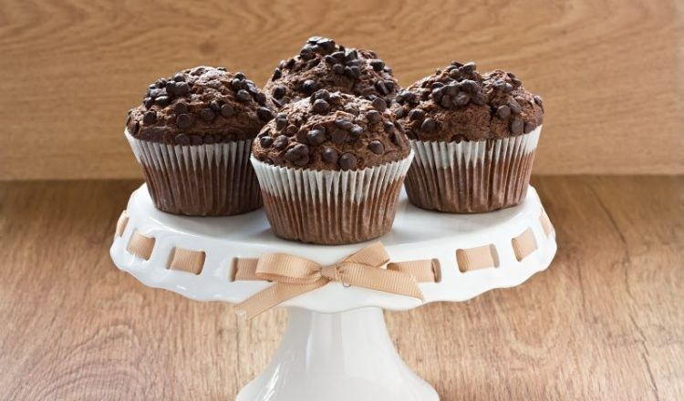

1. Чоколадото се сечка на покрупни парчиња. 2. Во длабок сад убаво се мешаат сувите состојки. 3. Посебно се матат течните состојки. 4. Добиената смеса се додава во садот со сувите состојки и се меша колку да нема грутки. 5. Се полнат хартиени корпици во калап за мафини, се печат 15-20 минути во претходно загреана рерна на 200 степени. Важно е сувите состојки убаво да се измешаат, особено парчињата чоколадо. Во текот на мешањето ќе бидат покриени со брашно што ќе спречи да потонат на дното на калапите, а со тоа и полесно ќе се одвојуваат од хартиените корпи. Мафините пред печењето може да се посипаат со парчиња чоколадо, тоа само придонесува за нивниот богат вкус.
 Потребни состојки 250г брашно 1 кесичка прашок за пециво половина лажиче сода бикаробона две лажици какао 175г кафеав шеќер 150г црна чоколада 250мл млеко 90мл масло едно јајце две лажици екстракт од ванила лажица рум
*Кликни овде за повеќе рецепти!